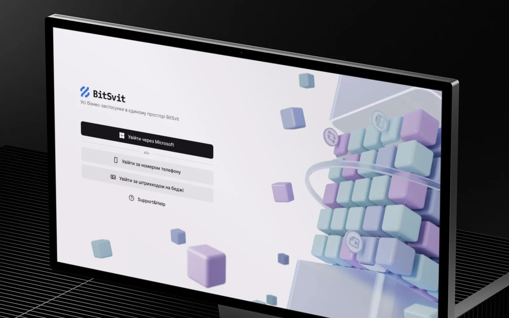
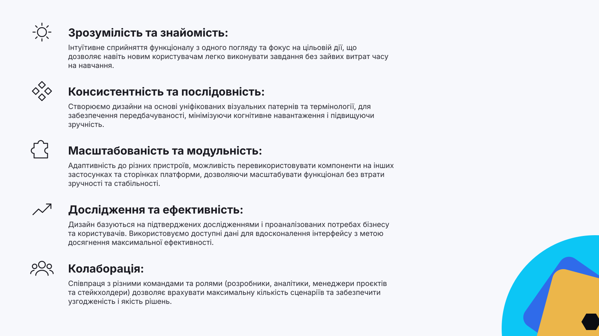
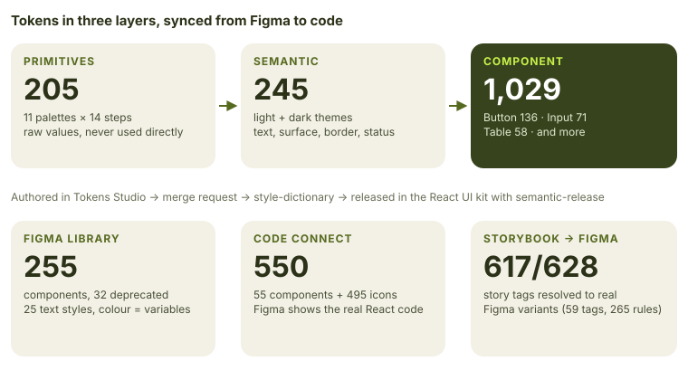

BitSvit Platform — one portal for all of a group’s business apps.BitSvit Platform — один портал для всіх бізнес-застосунків групи.
BitSvit brings the business apps of Fozzy Group into one web portal that works on desktop, tablet and phone. I own its design system and design platform and access-management screens together with a second designer — from principles and requirements to reviews of the shipped React code.BitSvit об’єднує бізнес-застосунки Fozzy Group в одному вебпорталі, який працює на комп’ютері, планшеті й телефоні. Я відповідаю за його дизайн-систему і разом із другим дизайнером проєктую екрани платформи та керування доступом — від принципів і вимог до рев’ю React-коду, що вже вийшов у реліз.

The business problem: dozens of tools, one way in.Бізнес-задача: десятки інструментів, один вхід.
TemaBit is the IT company of Fozzy Group and builds most of the holding’s software. For years employees worked in a desktop client, where a typical user had about 26 separate products. BitSvit replaces it with an API-first web platform: one sign-in, one home screen, one navigation model — on any device, including personal ones.TemaBit — IT-компанія Fozzy Group, яка створює більшість програмного забезпечення холдингу. Роками працівники користувалися десктопним клієнтом, де типовий користувач мав близько 26 окремих продуктів. BitSvit замінює його API-first вебплатформою: один вхід, один головний екран, одна модель навігації — на будь-якому пристрої, зокрема особистому.
Several companies of the group use the platform as separate tenants with isolated data. The first product in production is BitCore IAM, which authorises users for every other product on the platform. Subscriptions, billing and further business apps are built on the same foundation by different product teams.Кілька компаній групи працюють на платформі як окремі тенанти з ізольованими даними. Перший продукт у продакшні — BitCore IAM, який авторизує користувачів для всіх інших продуктів платформи. Підписки, білінг та інші бізнес-застосунки різні продуктові команди будують на тій самій основі.

My role and how the team works.Моя роль і як працює команда.
I am the designer responsible for the design system: the Figma library, the React UI kit in Storybook and the rules for using them. I also design platform and access-management flows together with a second product designer. The team includes a product owner, a business analyst, a frontend tech lead with developers, and QA.Я дизайнер, який відповідає за дизайн-систему: бібліотеку у Figma, React UI-кіт у Storybook і правила їх використання. Також разом із другим продуктовим дизайнером я проєктую флоу платформи та керування доступом. У команді є продакт-оунер, бізнес-аналітик, техлід фронтенду з розробниками і QA.
- Scrum rhythmРитм ScrumSprints with planning, refinement, estimates in story points, demo and retrospective, plus a weekly design sync.Спринти з плануванням, рефайнментом, оцінками в story points, демо й ретроспективою, а також щотижневий дизайн-синк.
- Design before refinementДизайн до рефайнментуDevelopers see the mockup before the task is refined, so estimates rest on the real solution and not on a guess.Розробники бачать макет ще до рефайнменту задачі, тож оцінки спираються на реальне рішення, а не на здогадку.
- One place for approved designОдне місце для затвердженого дизайнуA marked section in Figma holds only the final, approved version. Every development ticket links to its design task.Окрема позначена секція у Figma містить лише фінальну затверджену версію. Кожен тікет розробки посилається на свою дизайн-задачу.
- AI drafts need a designerAI-чернетки потребують дизайнераPrototypes generated by AI move forward only after a design review.Прототипи, згенеровані AI, йдуть далі лише після дизайн-рев’ю.
In September 2024 I ran workshops where the design team agreed on five principles. They work as the tie-breaker in later decisions: when two solutions look equally good, the one that serves the principles wins.У вересні 2024 року я провів воркшопи, на яких дизайн-команда узгодила п’ять принципів. Далі вони допомагають ухвалювати рішення: коли два варіанти здаються однаково добрими, перемагає той, що краще відповідає принципам.


Access management: roles, groups and tenants.Керування доступом: ролі, групи й тенанти.
The business goal of BitCore IAM is to hand day-to-day access administration to the access-management department. These are not engineers, so the interface has to make a complex model clear: users, groups, tenants, roles that each product defines, and attribute-based rules on top of role-based ones.Бізнес-мета BitCore IAM — передати щоденне адміністрування доступу відділу керування доступом. Його працівники не інженери, тому інтерфейс має робити складну модель зрозумілою: користувачі, групи, тенанти, ролі, які визначає кожен продукт, і правила на основі атрибутів поверх рольових.
- Bulk role assignmentМасове призначення ролейA master-detail screen for assigning roles to many users or groups at once, with an explicit choice between adding to existing roles and replacing them — the costly mistake in this flow.Екран master-detail, щоб призначати ролі багатьом користувачам або групам одночасно, з явним вибором між додаванням до наявних ролей і їх заміною — саме тут помилка в цьому флоу коштує найдорожче.
- Scale casesСценарії масштабуRole copying between users and group import, designed for a real case with more than 2,000 groups.Копіювання ролей між користувачами та імпорт груп, спроєктовані під реальний випадок із понад 2000 груп.
- A first version that did not workПерша версія, яка не спрацювалаAfter an early demo the team admitted the permissions flow was inconvenient. We listed more than 30 issues and reworked it. I treat that demo as the cheapest test we ran.Після раннього демо команда визнала, що флоу дозволів незручний. Ми зібрали понад 30 проблем і переробили його. Я вважаю те демо найдешевшим тестом, який ми провели.
- How decisions are validatedЯк ми перевіряємо рішенняDesigns are reviewed with the access-management team and the frontend tech lead; the product owner collects feedback from current users. Before choosing a save pattern I compared how ten enterprise systems handle saving. Moderated usability tests with end users are the next step and have not been run yet.Дизайн ми рев’юємо з командою керування доступом і техлідом фронтенду; продакт-оунер збирає відгуки від поточних користувачів. Перш ніж обрати патерн збереження, я порівняв, як зберігають дані десять корпоративних систем. Модеровані юзабіліті-тести з кінцевими користувачами — наступний крок, їх ще не проводили.


Accessibility, languages and devices are requirements, not extras.Доступність, мови й пристрої — це вимоги, а не доповнення.
These three topics are written into the platform’s non-functional requirements, so every component and screen is designed against them.Ці три теми записані в нефункціональних вимогах платформи, тому кожен компонент і екран ми проєктуємо з урахуванням них.
- WCAG 2.1 AAWCAG 2.1 AAThe requirement covers contrast of 4.5 : 1 for text and 3 : 1 for interface elements, full keyboard operation, and state that never depends on colour alone. The honest status: it is a target in progress. An internal review in October 2026 found gaps — missing alt texts, keyboard navigation in places, no automated tests — and accessibility became a separate work stream.Вимога охоплює контраст 4.5 : 1 для тексту й 3 : 1 для елементів інтерфейсу, повне керування з клавіатури та стани, які ніколи не залежать лише від кольору. Чесно про статус: це ціль, до якої ми ще йдемо. Внутрішній аудит у жовтні 2026 року виявив прогалини — немає alt-текстів, місцями не працює клавіатурна навігація, немає автоматизованих тестів, — і доступність стала окремим напрямом роботи.
- My part in itМій внесокA contrast analysis of ten status colours that replaced semi-transparent badge tokens with opaque ones (text contrast now holds at 5.9–7.5 : 1 on any row background) and flagged the badge edge against WCAG 1.4.11. A component review that caught a disabled link still reachable from the keyboard. A typography pass that moved 857 text layers from 10 px to 12 px.Аналіз контрасту десяти статусних кольорів: він замінив напівпрозорі токени бейджів на непрозорі (контраст тексту тепер 5.9–7.5 : 1 на будь-якому фоні рядка) і позначив проблему з межею бейджа за WCAG 1.4.11. Рев’ю компонента, яке виявило, що вимкнене посилання досі доступне з клавіатури. Типографічна ревізія, яка перевела 857 текстових шарів із 10 px на 12 px.
- Two languagesДві мовиUkrainian and English, with user settings for language, date format, money format and currency. Two rules follow from that: no button has a width fixed to one translation, and every text reaches a component through props, never hard-coded.Українська та англійська, з налаштуваннями користувача для мови, формату дати, формату грошей і валюти. Звідси два правила: жодна кнопка не має ширини, підігнаної під один переклад, і весь текст компонент отримує через props, а не захардкодженим.
- Three device classesТри класи пристроївThe same functions from a 360 px phone and a 640 px tablet to a 1366 px desktop. Every platform page is designed at 1440 and at 375 px, and components were checked at 125% browser zoom.Ті самі функції — від телефона 360 px і планшета 640 px до десктопа 1366 px. Кожну сторінку платформи ми проєктуємо в 1440 і 375 px, а компоненти перевірили за масштабу браузера 125%.
A design system that stays in sync with React code.Дизайн-система, синхронізована з React-кодом.
The UI kit is a React and TypeScript library built on accessible primitives and documented in Storybook. My job is to make sure Figma and code describe the same thing — with tooling, not with manual checks.UI-кіт — бібліотека на React і TypeScript, побудована на доступних примітивах і задокументована у Storybook. Моя задача — щоб Figma і код описували одне й те саме, і забезпечують це інструменти, а не ручні перевірки.
- Token releasesРелізи токенівThree token layers, published through a flow I agreed with the developers: Tokens Studio, a merge request, an automatic release of the kit.Три шари токенів, які публікуються через узгоджений мною з розробниками процес: Tokens Studio, merge request, автоматичний реліз кіту.
- Code ConnectCode Connect550 links between Figma and code. A developer opens a component in Figma and sees its real React usage.550 зв’язків між Figma і кодом. Розробник відкриває компонент у Figma і бачить, як його насправді використовують у React.
- Storybook → FigmaStorybook → FigmaA mapping that resolves 617 of 628 story tags to real Figma variants, so a screen described in code can be rebuilt in Figma from library components.Мапінг, який зіставляє 617 із 628 тегів story з реальними варіантами у Figma, тож екран, описаний у коді, можна відтворити у Figma з компонентів бібліотеки.
- Reviews against the buildРев’ю реалізаціїI compare each implemented component with its spec in the browser: computed styles, every state, keyboard behaviour. The Link review alone found 8 mismatches.Я порівнюю кожен реалізований компонент з його специфікацією в браузері: computed styles, кожен стан, поведінку з клавіатури. Лише рев’ю Link виявило 8 розбіжностей.

Documentation that people and AI agents can follow.Документація, за якою можуть працювати люди й AI-агенти.
Components alone do not make screens consistent. I analysed 158 production screens and turned them into 32 patterns — page templates, filters, bulk actions, saving, notifications. Every rule carries a status: approved, default, hypothesis or open.Самі компоненти не роблять екрани узгодженими. Я проаналізував 158 продакшн-екранів і звів їх до 32 патернів — шаблони сторінок, фільтри, масові дії, збереження, сповіщення. Кожне правило має статус: затверджено, за замовчуванням, гіпотеза або відкрите питання.
- Written next to the codeПишемо поруч із кодомThe patterns live as Markdown beside Storybook, so designers, developers and AI coding agents read the same rules. Clickable prototypes are now assembled from real kit components and reviewed by design as a formal step.Патерни живуть у Markdown поруч зі Storybook, тож дизайнери, розробники й AI-агенти для кодування читають ті самі правила. Клікабельні прототипи тепер збирають із реальних компонентів кіту, а дизайн-рев’ю стало формальним кроком.
- A decision logЖурнал рішень21 recorded decisions with context and trade-offs: a 12-column grid with 1024 / 1440 / 1920 breakpoints, filters in a drawer as the standard, a data-grid base font of 12 px with a 14 px option, accessibility as its own work stream.21 зафіксоване рішення з контекстом і компромісами: 12-колонкова сітка з брейкпоінтами 1024 / 1440 / 1920, фільтри в drawer як стандарт, базовий шрифт таблиці даних (data grid) 12 px з опцією 14 px, доступність як окремий напрям роботи.
Closing the gap between design and delivery.Скорочуємо розрив між дизайном і продакшном.
I audited two years of design tasks against frontend tickets. A large share of finished design had never reached code — not because of quality, but because hand-off had no owner. The fix was process, not more components.Я зіставив дизайн-задачі за два роки з тікетами фронтенду. Значна частина готового дизайну так і не потрапила в код — не через якість, а тому що передача в розробку не мала власника. Рішенням став процес, а не нові компоненти.
- A live readiness pageЖива сторінка готовностіEvery component with its status in Figma, Storybook and production.Кожен компонент і його статус у Figma, Storybook і продакшні.
- A showcaseВітрина48 component cards, each linked to its Storybook story and its Figma master, so nobody has to ask what exists.48 карток компонентів, кожна з посиланням на story у Storybook і мастер-компонент у Figma, тож нікому не треба питати, що вже є.
- Design review inside deliveryДизайн-рев’ю в процесі розробкиA component or prototype moves forward only after a review against the real code.Компонент або прототип іде далі лише після рев’ю на реальному коді.
I do not have adoption or speed metrics yet, and I would rather say so than invent them. What I can show is the system itself and the process around it.Метрик впровадження чи швидкості в мене ще немає, і я краще скажу це прямо, ніж їх вигадаю. Показати я можу саму систему і процес навколо неї.
Three lessons I’m carrying forward.Три уроки, які я беру з собою.
- Requirements firstСпершу вимогиAccessibility, languages and devices cost little when they are constraints from day one, and a lot when they arrive as fixes.Доступність, мови й пристрої коштують мало, коли вони є обмеженнями з першого дня, і дорого, коли приходять як виправлення.
- Measure the hand-off, not the libraryВимірюйте передачу в розробку, а не бібліотекуThe number of components says little. The share of design that reaches production says a lot.Кількість компонентів мало що каже. Частка дизайну, що доходить до продакшну, каже багато.
- Show unfinished work earlyПоказуйте незавершене раноThe demo that exposed an inconvenient permissions flow saved months of polishing the wrong thing.Демо, яке показало незручний флоу дозволів, зберегло місяці шліфування не того рішення.
If you liked this, also see…
Found this through Upwork?
Then you already know where to reach me. Send the brief through your Upwork job post or an invite — I usually reply within a working day.